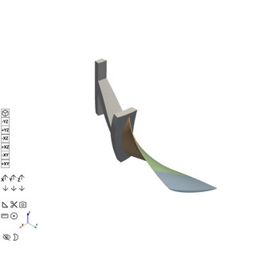
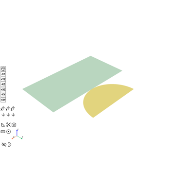
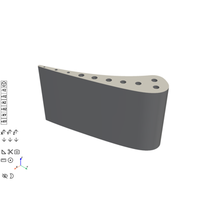
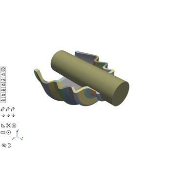
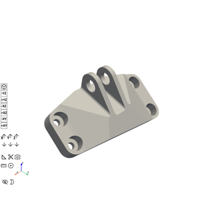

Examples#
Embedding examples for PyMechanical are contained in this repository.
These end-to-end examples show how you can use ansys-mechanical-core.
Technology showcase#
Using technology showcase examples demonstrates embedding capabilities of PyMechanical.

Inverse-Solving analysis of a rotor fan blade with disk
Inverse-Solving analysis of a rotor fan blade with disk

Contact Surface Wear Simulation
Contact Surface Wear Simulation

Thermal-Stress Analysis of a Cooled Turbine Blade
Thermal-Stress Analysis of a Cooled Turbine Blade

Nonlinear Analysis of a Rubber Boot Seal Model
Nonlinear Analysis of a Rubber Boot Seal Model

Shape Optimization of a Bracket
Shape Optimization of a Bracket
Gallery generated by Sphinx-Gallery